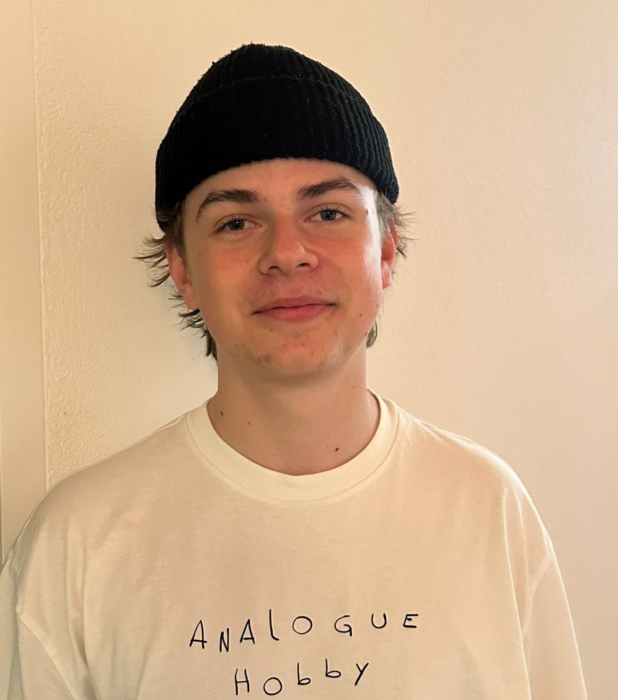

Wer sind wir eigentlich? Der Meggeliverein Wolfwil besteht aktuell aus sechs Mitgliedern. Wir sind (von links nach rechts): Noé Salzmann, Fabio Kissling, Nik Niederhauser, Kian Kissling und Livio Gunziger. Jonas Schmid, unser sechstes Mitglied, war am Fototermin leider nicht dabei, daher hier separat eingeblendet:
Wir sind sechs Jungs, die zusammen in Wolfwil aufgewachsen sind. Zusammen mit dem Fussball verbindet uns die Leidenschaft fürs Meggele. Die Schweizermeisterschaft war für uns als Kinder immer ein riesiges Highlight. Neben der guten Stimmung beim Restaurant Eintracht war für uns der Sport an sich etwas sehr faszinierendes.
Es war ungeheuer spannend, den erfahrenen Teams beim Spielen zuzuschauen und später beim Plauschspiel nach dem Turnier zu versuchen, dieselben Punktzahlen zu erreichen. Wir möchten als Verein dieses Gefühl an weitere Generationen weitergeben, sodass etwas so seltenes wie eine einzigartige Sportart hoffentlich niemals verloren geht. Lasst euch vom Geist des Meggele verzaubern und besucht unbedingt die nächste Schweizermeisterschaft auf der Allmend!